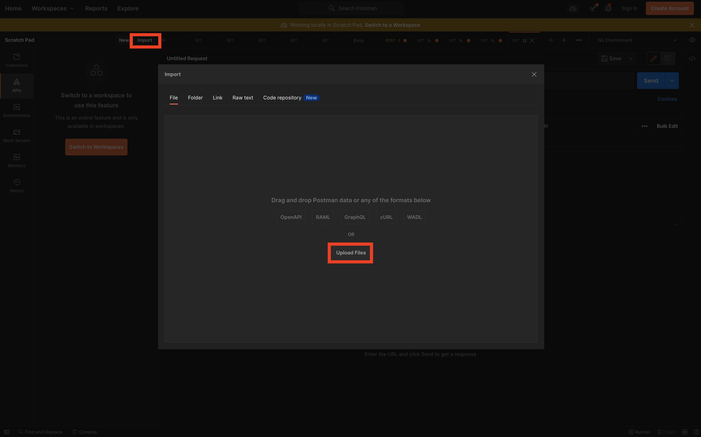

SAP DMC Exensibility Bootcamp¶
Participant Checklist¶
- Candidates should come to the bootcamp with their own DMC Demo system.
- The exercise guide will be done by the Partner BTP trial accounts. To get started, follow https://developers.sap.com/tutorials/hcp-create-trial-account.html
- Follow the "Prerequisite" section to install the necessary tools.
- Candidates should have preliminary knowledge on NodeJS, SAPUI5 and Business Technology Platform.
Prerequisite¶
node(Node.js version 12.x or 14.x is recommended)SAP Fiori Toolshttps://www.npmjs.com/package/@sap/generator-fioridocker(for example, Docker Desktop for macOS or Windows)- A source code editor (Visual Studio Code is recommended)
bashorzshshell to run the command snippets on MacOS or Linux, or Git Bash for Windows, MinGW, or Cygwin)kubectl(Kubernetes Command Line tool), see this tutorial how to install itcf(Cloud Foundry Command Line Interface (CLI))mta(Multitarget application interface)git(Git Downloads)@sap/cds-dk NPMpackage (npm install -g @sap/cds-dk)
Postman collection for DMC¶
Import collection in Postman 
Step 1 - Configure your trial account¶
- Go to SAP BTP Cockpit.
- Choose Go To Your Trial Account.
- If you don't have a user, you need to register for a free.
- Wait for the completion of the on-boarding.
- You should land on the Subaccounts page of your Global Account on trial.
- Choose trial.
- From the Navigation area, choose Security Trust Configuration.
- Select the default IdP by clicking on the name attribute. The name might be SAP ID Service or Default Identity provider.
- Enter the e-mail of the user to whom you want to give permissions.
- Click Show Assignments.
- Click Assign Role Collection.
- From the Assign Role Collection dropdown list, select the relevant role collection:
- Select Business_Application_Studio_Developer to assign a role collection to a developer.
- Select Business_Application_Studio_Administrator to assign a role collection to an administrator.
- Select Business_Application_Studio_Extension_Deployer to assign a role collection to an extension developer.
Step 2 - Enable Kyma in Trial Account¶
You need an SAP BTP Subaccount with consumption-based model (that is, Cloud Credits).
For this tutorial you have two options:
Option 1: Create Your Own SAP BTP Trial Account¶
- Go to SAP BTP Cockpit.
- Choose Go To Your Trial Account.
- You should land on the Subaccounts page of your Global Account on trial.
- Choose trial.
- Go to Kyma Environment.
- Choose Enable Kyma.
- Provide a Cluster Name.
- Choose Create.
This takes a while. You can start the tutorial in the meantime.
Option 2: Use Your Existing SAP BTP Subaccount¶
If you already have an older trial account, then you might not see the Enable Kyma button. In that case:
- Go to Entitlements.
- Choose Configure Entitlements.
- Choose Add Service Plans.
- Search for and select Kyma runtime.
- Check the trial (Environment) checkbox.
- Choose Add 1 Service Plan.
- Choose Enable Kyma.
- Provide a Cluster Name.
- Choose Create. This takes a while. You can start the tutorial in the meantime.
Step 3 - Assign Kyma Roles to User¶
SAP BTP’s XSUAA is used to access the Kyma runtime. Please follow the steps to assign Roles in the Kyma Environment.
Step 4 - Getting started with Business Application Studio¶
SAP Business Application Studio is a development environment available on SAP Business Technology Platform. To get started, please follow the link: https://developers.sap.com/tutorials/appstudio-onboarding.html
Step 5 - Install SAP Plant Connectivity - Link¶
Step 6 - Install SAP Cloud Connector - Link¶
Step 7 - Install UAExpert¶
Step 8 - Configure machine model in DMC - Link¶
Step 9 - Configure CPI for your backend ERP integration (Optional)¶
Step 10 - Load DMC Demo Data to be done by SAP DevOps team¶
Services and Subscription to be used from Business Technology Platform¶
- SAP Business Application Studio - Link
- Kyma Runtime - Link
- Cloud Foundary Runtime
- HTML5 Application Repository
- Destination Service Link
- SAP Integration Suite (CPI) (optional)
References¶
- DMC Extensibility Webinar -Digital Manufacturing Cloud Extensibility Overview PDF | Recording
- Getting ready for Extensions - https://blogs.sap.com/2020/04/16/sap-digital-manufacturing-cloud-ready-for-extensions/
- Sample Code - https://github.com/SAP-samples/digital-manufacturing-extension-samples
- DMC Business API Hub - https://api.sap.com/package/SAPDigitalManufacturingCloud?section=Artifacts
- Blog for DMC Integration Extensions - https://blogs.sap.com/2021/08/24/sap-digital-manufacturing-cloud-integration-extension, https://blogs.sap.com/2020/04/16/sap-digital-manufacturing-cloud-ready-for-extensions